Unity Basics: Working with Audio
Note
Table of Contents:
Created by Daniel Dehaan, 2021-09-20
Note
Project Setup
-
Create a new 3D Unity project and name it “FA22_MUSC-601_Week-03_First initial Last name” (e.g. FA22_MUSC-601_Week-03_DDehaan).
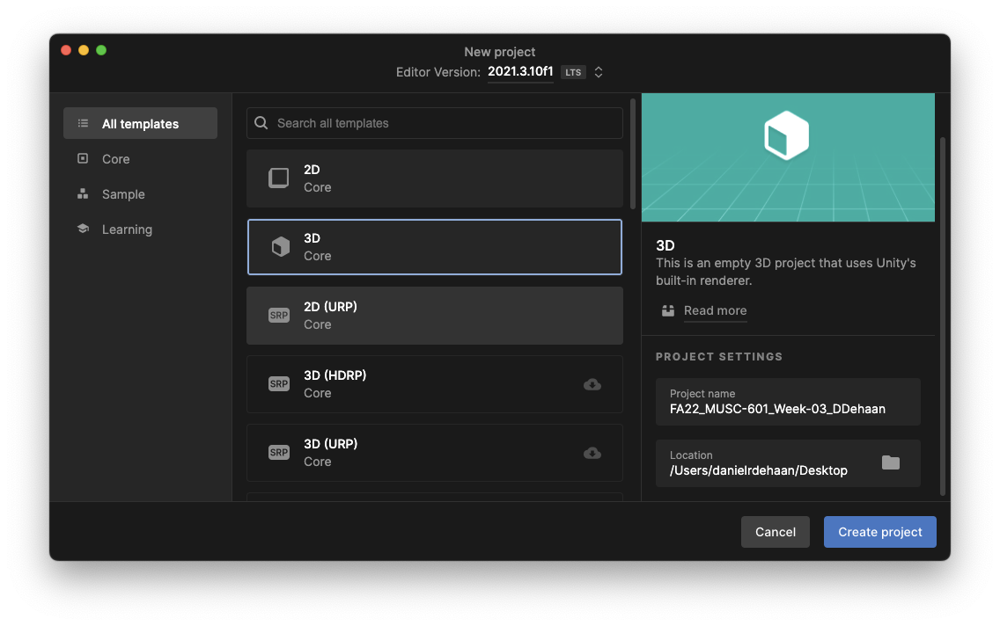
-
Import the Starter Assets - Third Person Character Controller from the Unity Asset Store.
-
After clicking the link above, click “Add to My Assets”.

Note
-
2. Click "Open in Unity".

3. Make sure the Starter Assets - Third Person Character Controller package is selected and click “Download” and/or “Import”.

4. If a second import window appears make sure all the assets are selected and click "Import".

3. If you get a pop-up warning about this project using a new input system, click “Yes.”

4. Once the import completes and the Unity Editor has restarted, open the demo scene found in the Project window **by navigating to Assets > StarterAssets > ThirdPersonController > Scenes and double-click “Playground”.

5. Save the current scene as “Audio-Playground” in the Assets > Scenes folder by right-clicking on the top-level Playground Scene within the Project Hierarchy window and choosing Save Scene As…

6. Test the scene by clicking the play button near the top of the Unity Editor window.

> [!note]
Adding Music Loop
-
Check that the scene’s MainCamera game object has an Audio Listener component.
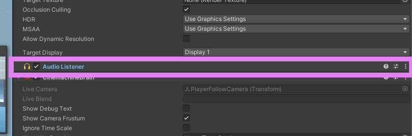
-
Right-click in the empty space of the Hierarchy window and create an Empty game object **called “MusicLoop”.
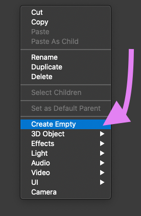
-
In the new game object’s inspector, add an Audio Source component.
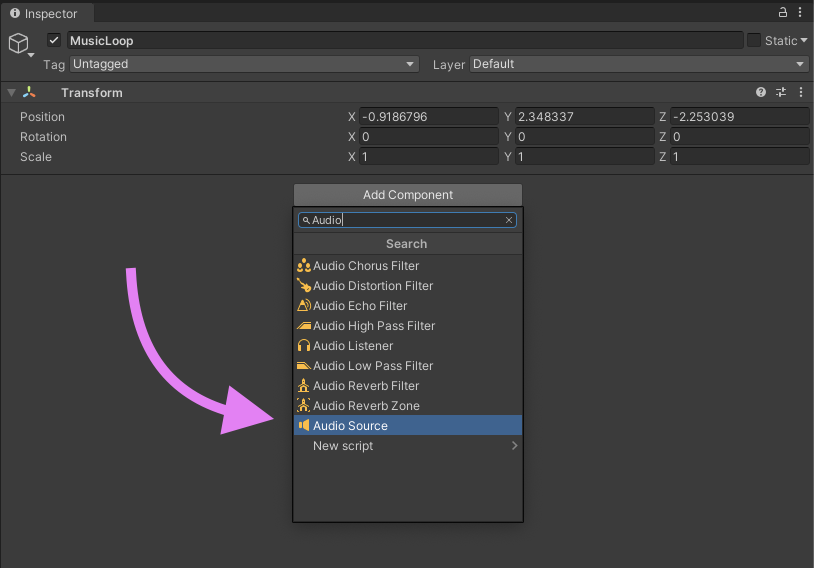
-
Using the Project window, create a new “Music” folder inside the Assets folder.
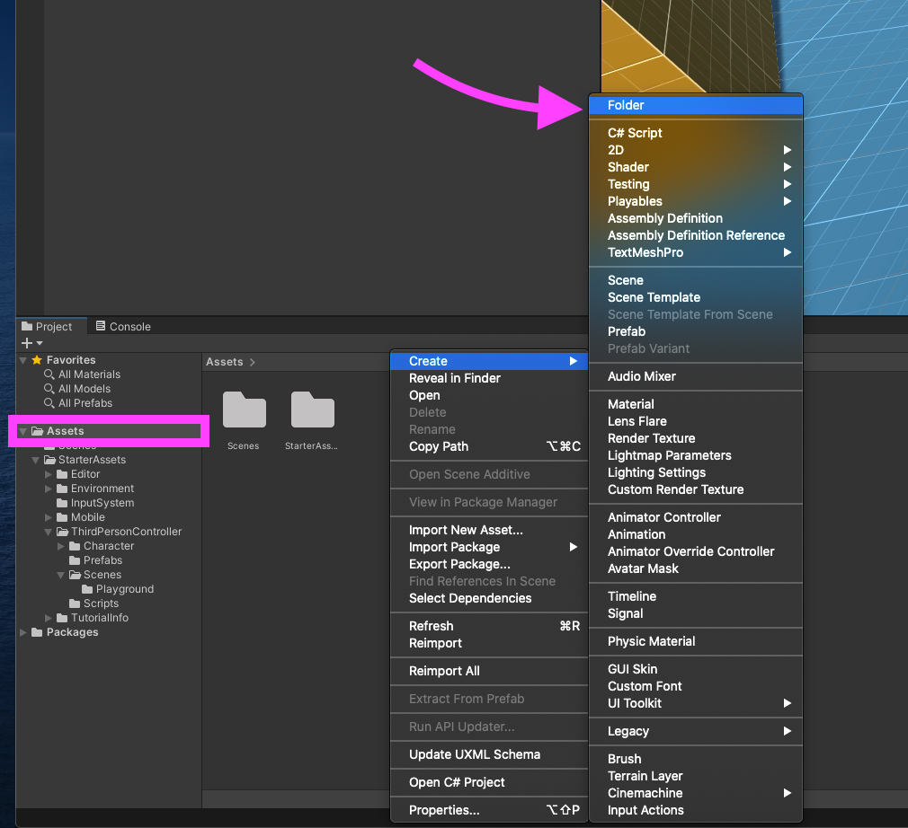
-
Import any music .WAV file of your choosing, by dragging and dropping into the new Music folder.
-
After the .WAV file has finished importing, drag it from the Project window into the Audio Clip parameter of the MusicLoop game object’s Audio Source component.
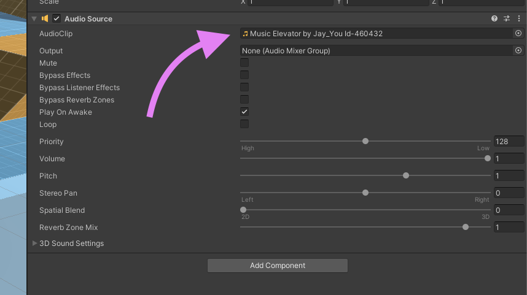
-
Check that both the Play On Awake and Loop options are enabled.
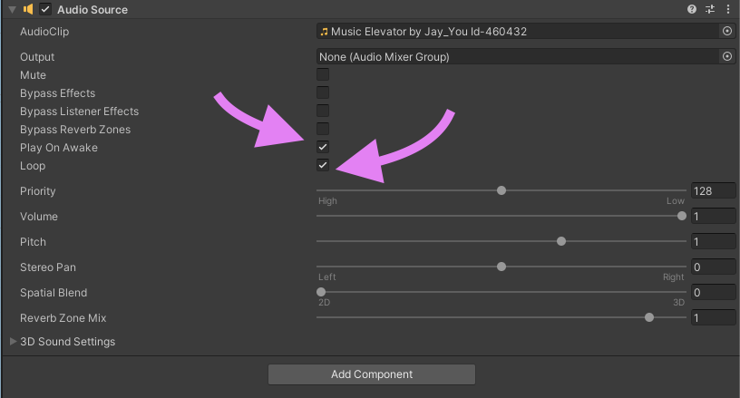
-
Test by clicking the Play button.
Note
Adding Footsteps
-
Navigate to Assets > Standard Assets > ThirdPersonController > Character > Animations > Locamotion—Walk_N.anim

-
Expand the Events section.

-
Move the model into a good position to see the feet.

- Option/Alt + click + drag = turn camera
- Click+Drag = slide camera
- Option/Alt + mouse wheel up/down to zoom in/out
-
Drag on Play Ruler (above model view) to find the first footfall and add a “Step” event by clicking the Add Event button.

-
Repeat the previous step for all footsteps.
-
When a “Step” event has been added to all animated footsteps, click “Apply”.

-
Select the PlayerArmature game object in the Hierarchy window, and, if one does not already exist, add an Audio Source component.

-
Add a new Script Component named “Audio_Trigger_Animation_Event_Step” to the PlayerArmature game object.
Note
-
In the Project window, create a new Scripts folder inside the main Assets folder and move your new Audio_Trigger_Animation_Event_Step inside of the new folder.
-
Open new Script in Visual Studio.

-
In Visual Studio edit the script so it matches the one shown below:
using System.Collections; using System.Collections.Generic; using UnityEngine; public class Audio_Trigger_Animation_Event_Step : MonoBehaviour { public AudioClip[] footsteps; private AudioSource audioSource; private void Awake() { audioSource = GetComponent<AudioSource>(); } private void Step() { AudioClip clip = GetRandomClip(); audioSource.PlayOneShot(clip); } private AudioClip GetRandomClip() { return footsteps[UnityEngine.Random.Range(0, footsteps.Length)]; } } -
Save and close the script.
-
Inside the main Assets folder, create a new folder called SFXs, and import these footstep audio files:

-
Add several footstep audio clips to the Footsteps array within the Audio_Trigger_Animation_Event_Step component.

-
Test by running the game.
Note
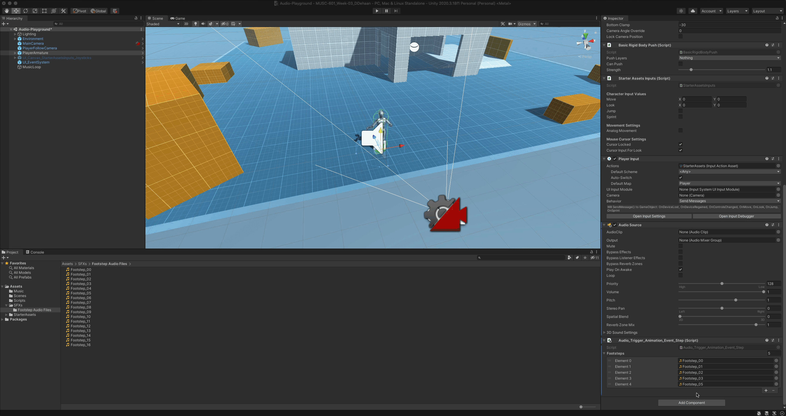
Note
Audio Mixers
By default, all new Audio Source components output their signal directly to the scene’s Audio Listener component (usually found on the MainCamera game object). Unity’s Audio Mixers can be used to control and effect the flow of sound from the scene’s Audio Sources to the Audio Listener.
Creating and Audio Mixer
-
Begin by creating a new Audio Mixer folder inside the main Assets folder.
-
Inside the new folder, right-click to create a new Audio Mixer and call it “Audio Mixer”.
-
Then double-click on the new Audio Mixer to open the Audio Mixer window .

Along the left side of the Audio Mixer window you’ll see the four sections:
- Mixers contain groups (similar to a track inside a DAW). They are called “groups” **because they can have any number of Audio Sources or other Audio Mixers routed through them.
- Snapshots save recallable presets for a Mixer.
- Groups are the “tracks” of a Mixer.
- Views store/recall visibility setting while editing, making it easier to work with lots of groups.
Simple Audio Mixer Example
Previously we used the Volume slider of our MusicLoop’s Audio Source component to balance the levels between the background music and the sound of the character’s footsteps. Let’s try using an Audio Mixer to accomplish the same thing.
-
Begin by returning the background music’ volume to 1. We’ll now use the Audio Mixer to control the volume of the music.

-
Next add a new group call “Background Music” by clicking the ’+’ button near the top right of the Groups section.

-
Finally select the Background Music Group as the Output destination for the Background Music’s Audio Source component.
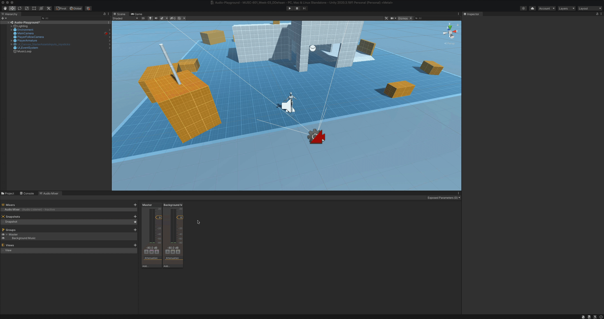
-
Repeat this same process for the footsteps and any other SFX you may have added.

Note
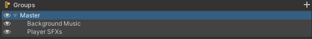
In this case, both the Background Music and Player SFXs groups output their audio signals to the Master group.
A mixers signal flow can be configured by dragging the groups around in this section.
Snapshots
-
Enter play mode, then, after pressing the ‘esc’ key to free your mouse from the game, enable the Audio Mixer’s Edit in Play Mode feature.
-
Right click the default snapshot and rename it to “Music Up”
-
Then click the ’+’ button to create a new snapshot called “Music Down”
-
With the the Music Down snapshot selected, lower the volume of the Background Music group.
-
Then try listen and watch as you click back and forth between the Music Up and Music Down snapshots.

Note
Note
Box Triggers
Box Triggers are invisible game objects within the scene that are used to trigger events whenever a player moves through them.
Let’s create a box trigger so that whenever our player walks through the short tunnel the background music fades out, and an owl “hoots” randomly for as long as the player remains inside the tunnel.
-
Begin by bringing the short Tunnel_Prefab game object into focus by
- Selecting it in the Hierarchy window under Environment > Greybox > Tunnel_Prefab
- Then hover the cursor over the Scene window and pressing the ‘f’ key

Note
-
Right click on the Tunnel_Prefab object in the Hierarchy window and create a new 3D Object > Cube game object named “Box_Trigger”.

-
With the new Box_Trigger object selected in the Hierarchy window, navigate to the Inspector widow and adjust all of the following parameters to…
-
Transform > Position x = 0, y = 0, z = 1.25
-
Transform > Scale x = 2.5, y = 6, z = 2.5

-
Disable its Mesh Renderer

-
And enable the *Box Collider’s ‘*Is Trigger’ option.

-
-
With the Box_Trigger game object still selected in the Hierarchy window, add a new Script component and title it “Tunnel_Box_Trigger”

-
Open the script in Visual Studio and edit it so that it matches the one shown below. Then save and return to Unity.
using System.Collections; using System.Collections.Generic; using UnityEngine; using UnityEngine.Audio; public class Tunnel_Box_Trigger : MonoBehaviour { public AudioMixerSnapshot inSnapshot; public AudioMixerSnapshot outSnapshot; public float fadeInTime; public float fadeOutTime; public AudioClip[] tunnelSounds; private AudioSource audioSource; private bool playerIsInTunnel = false; private void Awake() { audioSource = GetComponent<AudioSource>(); } private void Update() { if (playerIsInTunnel == true && audioSource.isPlaying != true) { AudioClip clip = GetRandomClip(); audioSource.PlayOneShot(clip); } } private void OnTriggerEnter(Collider other) { if (other.gameObject.CompareTag("Player")) { playerIsInTunnel = true; if (inSnapshot != null) inSnapshot.TransitionTo(fadeInTime); } } private void OnTriggerExit(Collider other) { if (other.gameObject.CompareTag("Player")) { playerIsInTunnel = false; if (outSnapshot != null) outSnapshot.TransitionTo(fadeInTime); } } private AudioClip GetRandomClip() { return tunnelSounds[UnityEngine.Random.Range(0, tunnelSounds.Length)]; } } -
Back in Unity, specify which snapshot should be recalled when the player is either inside or outside the tunnel.
-
Next, set the time it takes to transition between the two snapshots.

-
Now we need some tunnel sounds! Download the sounds below and import them into a new “Tunnel Sounds” folder inside of the existing SFXs folder.
-
Add a couple of these audio clips as items in the Tunnel Sounds array (list).

-
Finally, add an Audio Source component to the Box_Trigger game object.
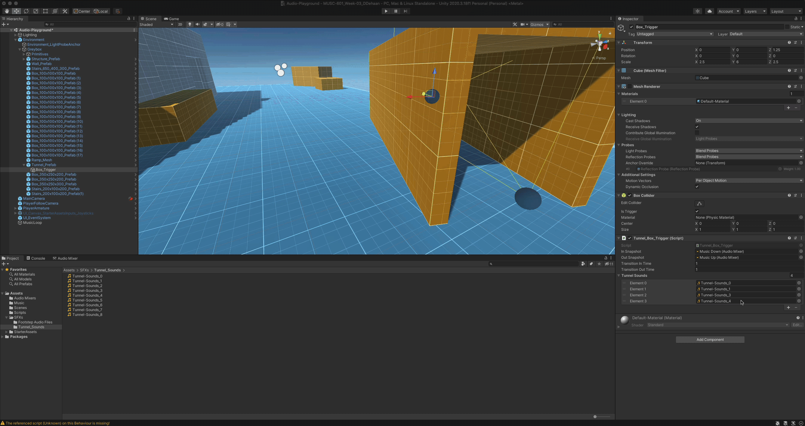
-
Now test to see that everything works by playing the game and moving the player in and out of the tunnel.
Note
Note
Challenge
Once you’ve completed all the previous steps, see if you can apply the knowledge you have gained to fill out the rest of your audio world by adding additional sounds that are…
- 2D looping audio sources
- 3D looping audio sources
- triggered by animation events
- triggered by a box trigger
- And. finally, give the terrain some textural shifts by creating several other Audio Mixer Snapshots that are triggered as the player moves around the scene.